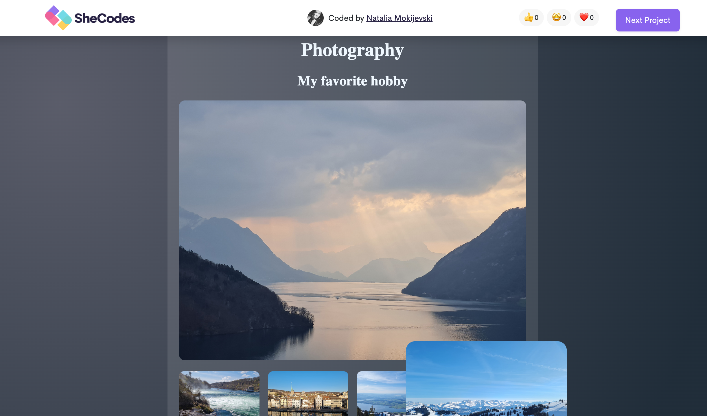
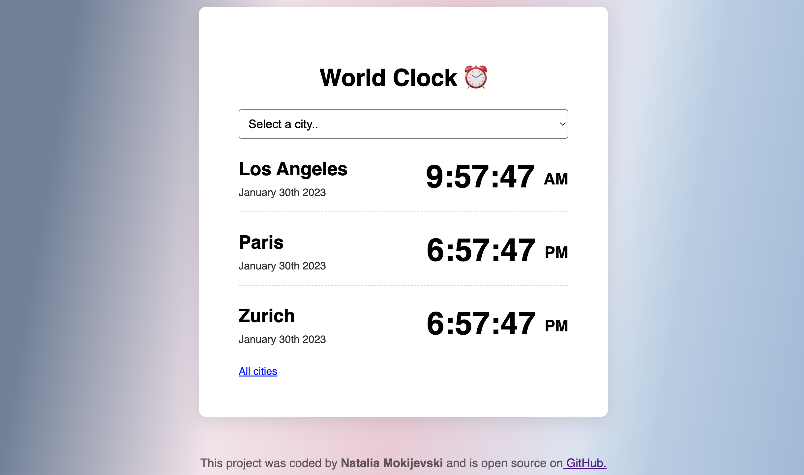

Bowl project
A Tibetan singing bowl is a type of bowl that vibrates and produces a rich, deep tone when played. Also known as singing bowls or Himalayan bowls, Tibetan singing bowls are said to promote relaxation and offer powerful healing properties.Sound Therapy The benefits of listening to the bowls may be related to the ancient practice of sound therapy.

Photography
My love - nature photography, I love to travel a lot and make photos. Nature photography is a wide range of photography taken outdoors and devoted to displaying natural elements such as landscapes, wildlife, plants, and close-ups of natural scenes and textures. Nature photography tends to put a stronger emphasis on the aesthetic value of the photo than other photography genres, such as photojournalism and documentary photography.Weather app
Next my project it was weather app, it was interesting and not always easy to work on this project.
